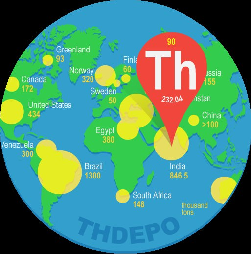

CORRECT!
Thorium is that it is not capable of sustaining a chain reaction as needed for the operation of commercial reactors. Chain reaction is a reaction that has the ability of causing a subsequent reaction by itself. For eg, Uranium (U-235) is capable of undergoing a fission reaction and then using neutrons released from the previous reaction to sustain the next fission thereby causing a chain reaction. U-235 is therefore called fissile. Thorium (Th-232) is not fissile but a nuclear reaction allows us to convert Th-232 to U-233. U-233 is fissile and can be successfully employed to run a commercial nuclear power plant.
The Nuke Quiz #4
Question 5
Inspite of housing almost 25% of world's total thorium resources, why does India not use thorium for running commercial reactors?
